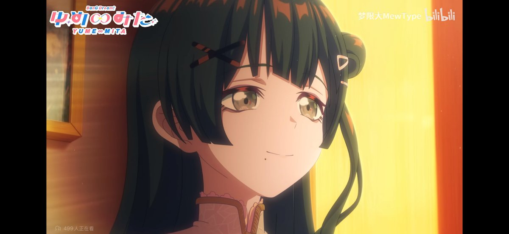

f hv
@fhv932189957574
可是我感觉这个东西群人磕薇藤真的有点魔怔了，啥都能磕，你薇姐只要策反藤都子甚至能给叙事层也给策反了，我寻思薇姐不实打实是坏人吗怎么告诉藤都子我在骗你也算真诚，其他几个与之薇藤相比就是圣人，藤干脆加入妖精花束算了，谁知道薇姐是不是恶趣味呢，谁知道你藤都子到底有没有真的相信薇姐是sb，假药之，藤都子以为自己被薇姐讨厌了并且听懂了再次见面，要假装回去认错收集黑料讨好薇姐，最后给薇姐抓了，藤都子探监真是完美啊

夜凪
@yonagiUI
其實vol這裡是我全局目前為止最喜歡的一個畫面，她沒有把藤都子當棄子用完就丟，也沒有遮掩、如藤都子所願繼續欺騙，而是告訴她，「我就是這樣的虛偽，這樣的壞，這樣的利用你，你還願意愛我嗎，你愛那個閃耀的我，你也能愛這個骯髒的我嗎」這種回應是坦誠的，沒有掩飾的，對於vol來說藤都子何嘗不是特 https://t.co/05K56edIUI